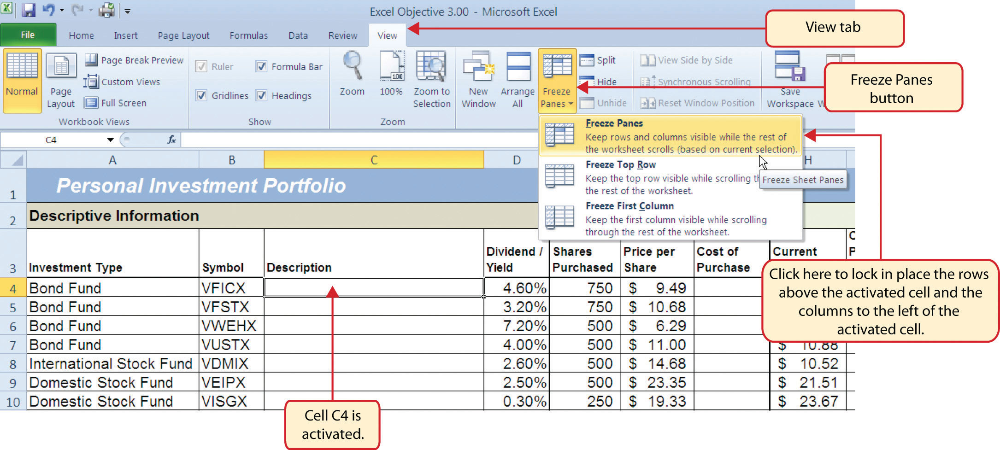
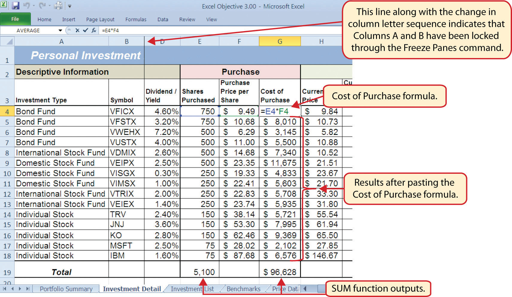
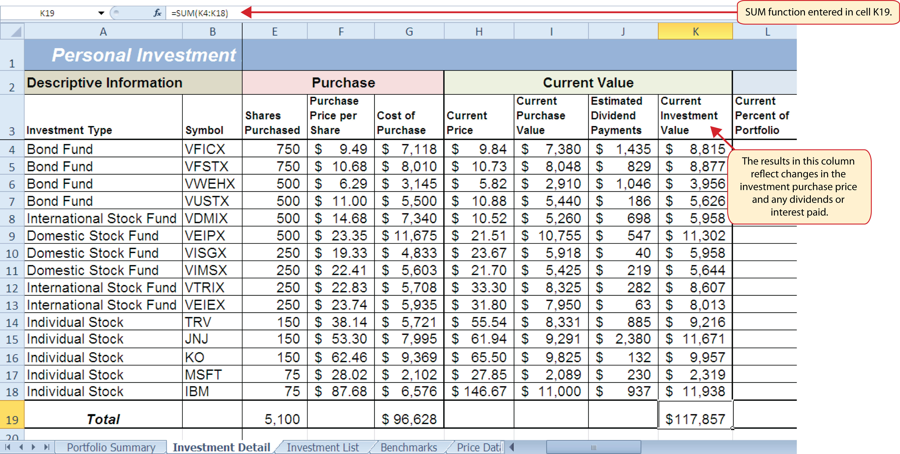
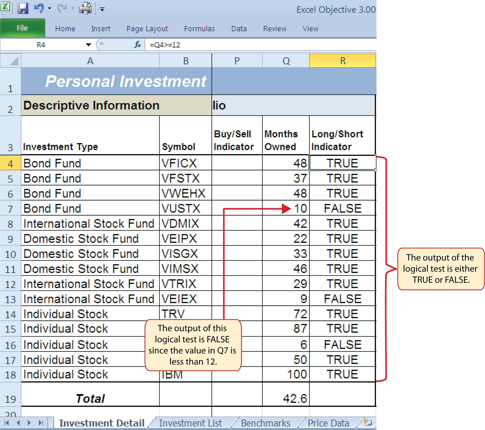
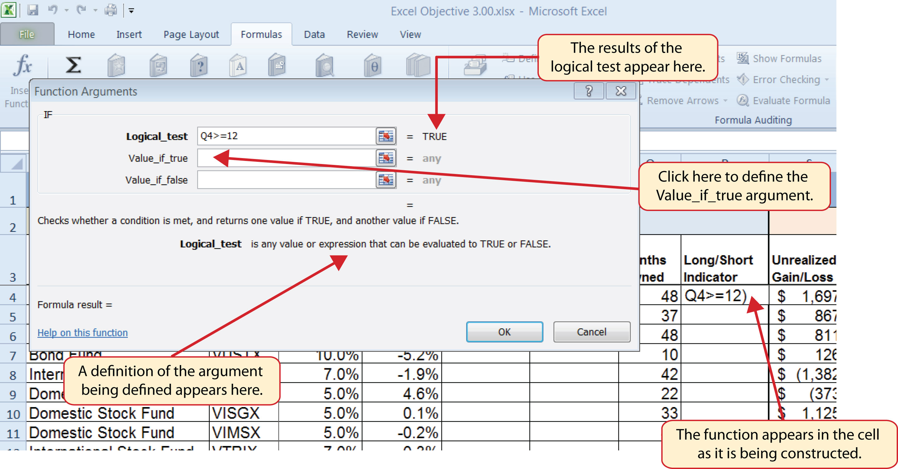
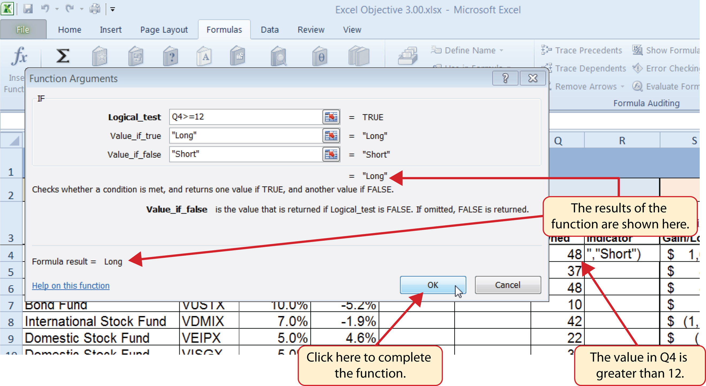
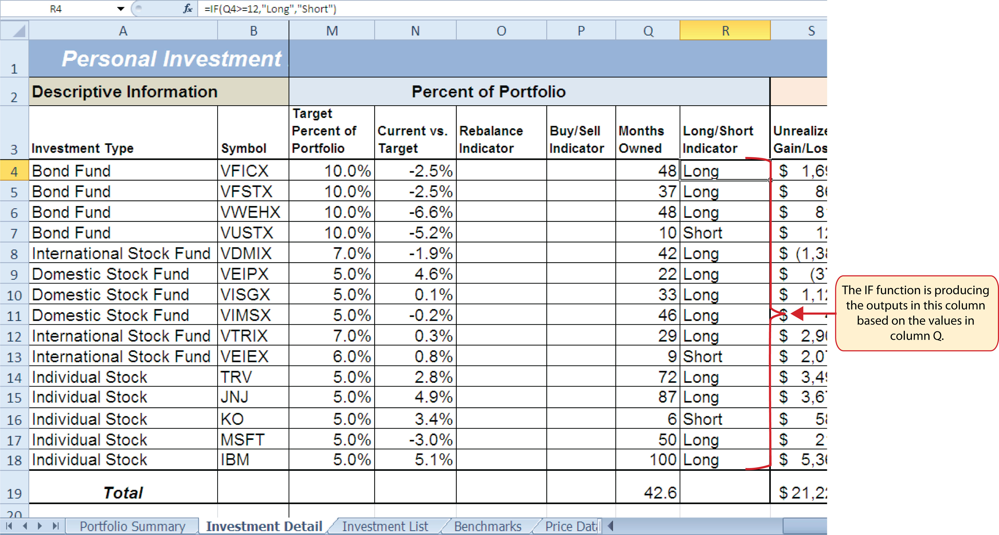
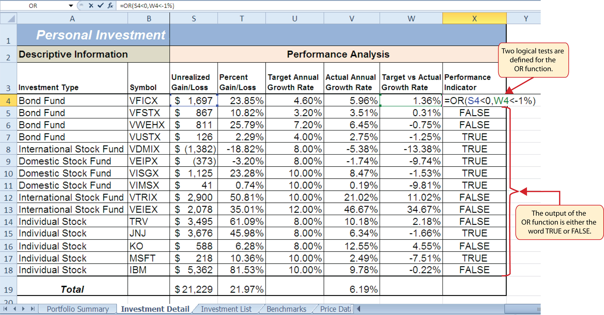
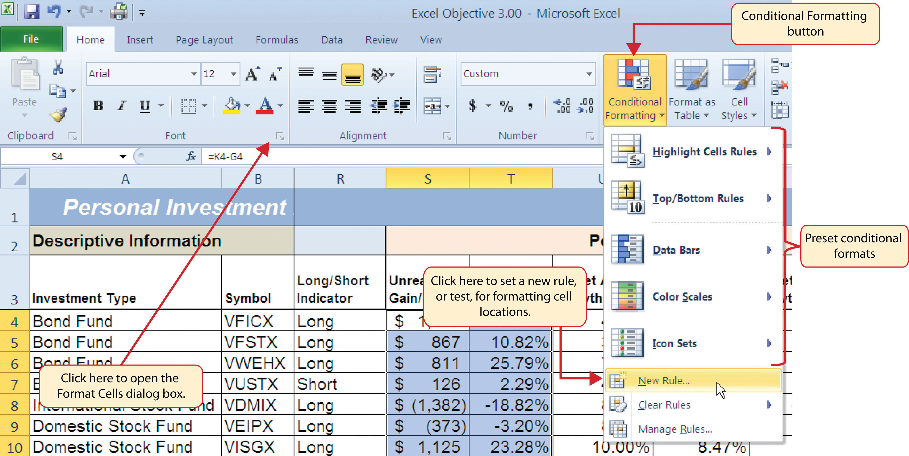
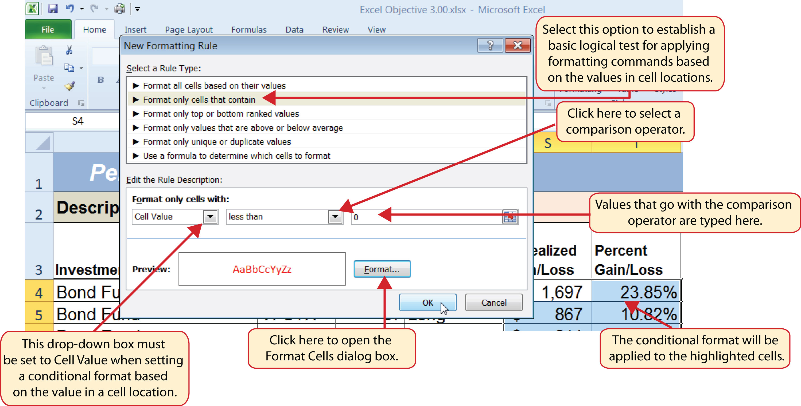

This section reviews the use of logical functions in Excel through the construction of an investment portfolio. Although it may seem that managing investments is a specialized career choice, the reality is that almost everyone will become an investor at some point in their lives. Many companies offer employees retirement savings benefits through 401(k) or 403(b)Employee retirement savings plans offered by businesses and by public and private institutions. These plans allow you to deduct money from your paycheck every month, tax-free, and invest it. plans. These plans allow you to deduct money from your paycheck every month, tax-free, and invest it. In addition to the tax benefits afforded by such plans, many employers match a percentage of your monthly savings or deposit money into your retirement account as an added form of compensation. When you sign up for these savings plans, your company will give you a list of options as to how your money can be invested, and you choose the type of investments you would like the company to make on your behalf. As a result of this process, you become an investor. Excel can be an extremely valuable tool to help you make these investment decisions and analyze the performance of the money you have invested.
Figure 3.1 "Completed Personal Investment Portfolio Workbook" shows the completed investment portfolio workbook that we will complete in this chapter. Similar to the personal budget example in Chapter 2 "Mathematical Computations", the Portfolio Summary worksheet contains a summary of the data entered or calculated in other worksheets in the workbook. This project begins by building on the Investment Detail worksheet.
Figure 3.1 Completed Personal Investment Portfolio Workbook

Follow-along file: Excel Objective 3.00
The Investment Detail worksheet shown in Figure 3.2 "Investment Detail Worksheet" contains the majority of the information used to create the Portfolio Summary worksheet shown in Figure 3.1 "Completed Personal Investment Portfolio Workbook". When you first open the worksheet, you will notice it is not possible to view all twenty-four columns on your computer screen. As you scroll to the right to view the rest of the columns, you will lose site of the row headings in Columns A and B. The headings in these columns show the investment that pertains to the data in Columns C through X. To solve this problem of viewing the row headings while scrolling through the remaining columns in the worksheet, we will use the Freeze Panes command.
Figure 3.2 Investment Detail Worksheet

The Freeze PanesAn Excel command that allows you to lock specific columns and rows in place while scrolling through a large worksheet. command allows you to scroll across the Investment Detail worksheet while keeping the row headings in Columns A and B locked in place. The following steps explain how to do this:
Figure 3.3 Freeze Panes Command
Once you click the Freeze Panes option shown in Figure 3.3 "Freeze Panes Command", Columns A and B are locked in place as you scroll through the columns in the worksheet. Since this is a large worksheet, you may find it easier to navigate the columns by using the arrow keys on your keyboard. However, since rows 1 and 2 contain merged cells, make sure a cell location is activated below Row 2 before you begin using the arrow keys. Figure 3.4 "Freeze Panes Command Activated on the Investment Detail Worksheet" shows the appearance of the Investment Detail worksheet after the Freeze Panes command has been activated. To deactivate the Freeze Panes command, click the Freeze Panes button again and select the Unfreeze Panes option.
Figure 3.4 Freeze Panes Command Activated on the Investment Detail Worksheet

Follow-along file: Continue with Excel Objective 3.00. (Use file Excel Objective 3.01 if starting here.)
We will begin developing the personal investment portfolio workbook by adding several formulas and functions. The formulas and functions we will add were illustrated in detail in Chapter 2 "Mathematical Computations". Therefore, the steps provided in this chapter will be brief. After the formulas and functions are added to the Investment Detail worksheet, we can add the logical and lookup functions. However, before proceeding, let’s review the investment type definitions in Table 3.1 "Investment Types in Column A of the Investment Detail Worksheet". Table 3.1 "Investment Types in Column A of the Investment Detail Worksheet" provides a definition for each of the investment types listed in Column A of the Investment Detail worksheet. This project assumes that the personal investment portfolio comprises four types of investments. The reason we include a variety of investment types in any portfolio is to manage our total risk, or potential of losing money. When building an investment portfolio, it is important to keep in mind that investments of all types can dramatically increase or decrease in value over a short period of time. Managing risk requires that your money is not concentrated in one type of investment.
Table 3.1 Investment Types in Column A of the Investment Detail Worksheet
| Category | Definition |
|---|---|
| Bond Fund | A mutual fund consisting of a variety of bonds. The benefit of buying shares of a fund as opposed to a specific bond is that doing so allows you to spread your investment over several bonds instead of concentrating your investment in just one bond. |
| Domestic Stock Fund | A mutual fund consisting of several domestic stocks. Buying shares of a stock mutual fund provides the benefit of investing your money over several stocks. |
| International Stock Fund | Same as a domestic stock fund but contains a variety of non-US or foreign stocks. |
| Individual Stock | The stock for one specific company. In addition to mutual funds, this chapter’s portfolio will include a few individual stocks for public companies. When you purchase shares of a specific company, such as IBM, you become a partial owner of that company. |
We will begin adding formulas and functions to the Investment Detail worksheet in sections. If you scroll across all the columns in the worksheet, you will notice the worksheet includes five distinct sections. Four of the five sections contain columns that need to be completed with formulas and functions before we can add the logical and lookup functions. Table 3.2 "Definitions for Columns A through G of the Investment Detail Worksheet" contains definitions for each of the columns in the Descriptive Information section (Columns A through D) and the Purchase section (Columns E through G). It will be helpful to understand the purpose of these columns as we complete this worksheet.
Table 3.2 Definitions for Columns A through G of the Investment Detail Worksheet
| Category | Definition |
|---|---|
| Investment Type | The type of investment with regard to bonds and stocks. A definition for each of the investment types used in this portfolio can be found in Table 3.1 "Investment Types in Column A of the Investment Detail Worksheet". |
| Symbol | The symbol that represents a mutual fund or stock. This symbol can be used to research the profile or current trading price on any website that provides stock quotes. |
| Description | The company name for an individual stock or a description of the type of investments made by a mutual fund. |
| Dividend/Yield | The amount of interest earned on a bond or bond fund or the amount of earnings distributed per share for an individual stock or stock fund. |
| Shares Purchased | The amount of shares purchased for a mutual fund or individual stock. |
| Purchase Price per Share | The price paid for the shares purchased for the mutual funds and individual stocks in the portfolio. |
| Cost of Purchase | The number of shares purchased multiplied by the purchase price per share. This represents your base investment and is used to determine how much money has been gained or lost. |
The Descriptive Information section of the Investment Detail worksheet (Columns A through D) contains only one blank column, which will be completed using a lookup function. Therefore, we will proceed to the Purchase section (Columns E through G) where the Cost of Purchase column is blank. The following steps explain how to enter the formula into this column:
Figure 3.5 "Completed Formula in the Cost of Purchase Column" shows the formula that was entered into cell G4 in the Purchase section of the Investment Detail worksheet. You can also see the results of the formula after it is pasted into the range G5:G18. The Paste Formulas option was used to paste the formula into this range so the borders would not be altered.
Figure 3.5 Completed Formula in the Cost of Purchase Column
Table 3.3 "Definitions for Columns H through K of the Investment Detail Worksheet" shows the definitions for the Current Value section (Columns H through K) of the Investment Detail worksheet.
Table 3.3 Definitions for Columns H through K of the Investment Detail Worksheet
| Category | Definition |
|---|---|
| Current Price | The current price of an individual stock or the current net asset value of a mutual fund. |
| Current Purchase Value | The number of shares purchased multiplied by the current price. |
| Estimated Dividend Payments | The estimated amount of money paid for the interest on a bond fund or the dividends paid on a stock or stock fund. The future value function is used to estimate these payments. For an actual portfolio, real monetary distributions can be added to the current purchase value of the investment to calculate the total value of an investment. |
| Current Investment Value | The current purchase value plus the estimated dividend payments. The current investment value is compared with the cost of purchase to determine how much money is gained or lost. |
We will add a basic formula to the Current Purchase Value and Current Investment Value columns. For the Estimated Dividend Payments column, we will use the FV (future value) function to estimate the dividend payments. The following explains how we add the FV function to the Estimated Dividend Payments column:
Figure 3.6 "Completed FV Function in the Estimated Dividend Payments Column" shows the completed FV function in cell J4 of the Estimated Dividend Payments column. It is important to reduce the decimal places to zero after you enter the function into cell J4. Excel does not display the result of the function until the decimal places are removed because of the column width.
Figure 3.6 Completed FV Function in the Estimated Dividend Payments Column

The following steps explain how to add the formulas for the Current Purchase Value and Current Investment Value columns:
Figure 3.7 "Completed Current Value Section of the Investment Detail Worksheet" shows the completed columns of the Current Value section in the Investment Detail worksheet. The formula used to calculate the Current Investment Value illustrates why we used the FV function to calculate the estimated dividend or interest payments for an investment. Investments that earn interest or dividends can achieve growth in two ways. The first way is through interest or dividend payments. The second way is through changes in the price paid for the investment. The formula used to calculate the Current Purchase Value is taking the number of shares purchased for each investment and multiplying it by the current market price. Therefore, the Current Investment Value takes into account any changes in the investment price by adding the purchase value at the current market price to any dividends or interest payments earned.
Figure 3.7 Completed Current Value Section of the Investment Detail Worksheet
Table 3.4 "Definitions for Columns L through R of the Investment Detail Worksheet" provides definitions for the Percent of Portfolio section of the Investment Detail worksheet (Columns L through R).
Table 3.4 Definitions for Columns L through R of the Investment Detail Worksheet
| Category | Definition |
|---|---|
| Current Percent of Portfolio | The current investment value divided by the total current value of the investment portfolio. |
| Target Percent of Portfolio | The planned percentage each investment is intended to have for the entire portfolio. |
| Current vs. Target | The difference between the Current Percent of Portfolio column and the Target Percent of Portfolio column. |
| Rebalance Indicator | Shows which investments do not match the target percentage of the portfolio. For example, as one investment increases in value due to an increase in market price, it will comprise a greater percentage of the portfolio. This may require that some shares of this asset be sold and invested in other areas that may have decreased in value. This is known as rebalancing the portfolio, and it helps you sell investments when prices are high and buy investments when prices are low. |
| Buy/Sell Indicator | Based on the results of the Rebalance Indicator, a logical function is used to indicate whether an investment should be purchased or sold. |
| Months Owned | Shows how many months an investment is owned. The length of ownership is expressed in terms of months since dividend payments on stock funds and interest payments on bond funds are distributed monthly. |
| Long/Short Indicator | Shows whether an investment has been owned long enough to qualify as a long-term investment, which is greater than twelve months. The amount of taxes paid on the amount of money gained for a short-term investment is greater than a long-term investment. Therefore, there is a tax incentive to hold investments for more than twelve months. |
The Percent of Portfolio section of the Investment Detail worksheet (Columns L through R) requires two formulas and one function. The following steps explain how we add them to the worksheet:
Figure 3.8 "Percent of Portfolio Section of the Investment Detail Worksheet" shows the results of adding two formulas and a function to the Percent of Portfolio section of the Investment Detail worksheet. Notice the absolute reference added to the cell reference for K19 in the formula in the Current Percent of Portfolio column.
Figure 3.8 Percent of Portfolio Section of the Investment Detail Worksheet

Table 3.5 "Definitions for Columns S through X of the Investment Detail Worksheet" provides definitions for the columns in the Performance Analysis section of the Investment Detail worksheet.
Table 3.5 Definitions for Columns S through X of the Investment Detail Worksheet
| Category | Definition |
|---|---|
| Unrealized Gain/Loss | The amount of money gained or lost on an investment. It is considered unrealized because the loss or gain does not actually occur until the investment is sold. |
| Percent Gain/Loss | The percentage increase or decrease based on the unrealized gain/loss and the purchase value of an investment. |
| Target Annual Growth Rate | The expected annual growth rate for an investment. All investments are expected to grow over time. The rate of growth depends on the amount of risk taken. Investments that are a higher risk are expected to pay a higher rate of return. |
| Actual Annual Growth Rate | The percentage gain/loss divided by the amount of time an investment is owned expressed in terms of years. |
| Target vs. Actual Growth Rate | The difference between the actual annual growth rate and the target annual growth rate. |
| Performance Indicator | A logical function will be used to indicate which investments are underperforming with respect to the target vs. actual growth rate. |
Most of the columns in the Performance Analysis section of the Investment Detail worksheet will be completed with formulas and functions. The following steps explain how we add them to the worksheet:
Figure 3.9 "Performance Analysis Section of the Investment Detail Worksheet" shows the results of the formulas added to the Performance Analysis section of the Investment Detail worksheet. This completes the required formulas and functions necessary to add before moving on to the logical and lookup functions of the chapter.
Figure 3.9 Performance Analysis Section of the Investment Detail Worksheet

Follow-along file: Continue with Excel Objective 3.00. (Use file Excel Objective 3.02 if starting here.)
A key component for the logical functions that will be demonstrated in this section is the logical testAn expression used to evaluate the contents of a cell location. The logical test typically contains comparison operators such as equal to (=), greater than (>), less than (<), and so on. The results of the logical test can be either true or false. An example of a logical test is B8 >= 25, which is read as “if the value in cell B8 is greater than or equal to 25.”. A logical test is used in logical functions to evaluate the contents of a cell location. The results of the logical test can be either true or false. For example, the logical test C7 = 25 (read as “if the value in cell C7 is equal to 25”) can be either true or false depending on the value that is entered into cell C7. A logical test can be constructed with a variety of comparison operators, as shown in Table 3.6 "Comparison Operator Symbols and Definitions". These comparison operators will be used in the logical test arguments for the logical functions demonstrated in this chapter.
Table 3.6 Comparison Operator Symbols and Definitions
| Symbol | Definition |
|---|---|
| = | Equal To |
| > | Greater Than |
| > | Less Than |
| < > | Not Equal To |
| > = | Greater Than or Equal To |
| < = | Less Than or Equal To |
A logical test will be used to evaluate the contents of a cell location in the Investment Detail worksheet. We will first demonstrate how the logical test is used to evaluate the contents of a cell location. Then we will use this logical test in the IF function, which will be demonstrated next. The following steps explain how the logical test is constructed:
Type the number 12. This completes the logical test, which is shown in Figure 3.10 "Logical Test Entered into the Investment Detail Worksheet". The logical test would be stated as: “If the value in cell Q4 is greater than or equal to 12.”
Figure 3.10 Logical Test Entered into the Investment Detail Worksheet

Figure 3.11 "Output of the Logical Test" shows the results of the logical test after it is pasted into the range R5:R18. Notice that for any values that are less than 12 in the range Q4:Q18, the logical test produces an output of FALSE.
Figure 3.11 Output of the Logical Test
Follow-along file: Continue with Excel Objective 3.00. (Use file Excel Objective 3.03 if starting here.)
The IF function is used to produce a custom output based on the results of a logical test. If the results of the logical test are TRUE, the IF function can display a specific number or text, or perform a calculation. If the results of the logical test are FALSE, the IF function can display a different number or text, or perform a different calculation. The arguments of the IF function are defined in Table 3.7 "Arguments for the IF Function".
Table 3.7 Arguments for the IF Function
| Argument | Definition |
|---|---|
| Logical_test | A test used to evaluate the contents of a cell location. This argument typically utilizes comparison operators, which are defined in Table 3.6 "Comparison Operator Symbols and Definitions". The results of the test can be either true or false. For example, the test C7>25 would be read as if C7 is greater than 25. If the number 30 is entered into cell C7, the logical test is true. If you are evaluating a cell that contains text data, the text in the logical test must be placed inside quotation marks. For example, if you wanted to test if the word Long is in cell C7, the logical test would be C7 = “Long”. |
| [Value_if_true] | The output that will be displayed by the function or the calculation that will be performed by the function if the results of the logical test are true. This argument can be defined with a formula, function, number, or text. However, when defining this argument with a text output such as the word Long, it must be placed inside quotation marks (“Long”). |
| [Value_if_false] | The output that will be displayed by the function or the calculation that will be performed by the function if the results of the logical test are false. This argument can be defined with a formula, function, number, or text. However, when defining this argument with a text output such as the word Long, it must be placed inside quotation marks (“Long”). |
We will use the IF function in the Percent of Portfolio section of the Investment Detail worksheet. We will use the logical test that was previously demonstrated within the IF function to determine if an investment has been held for a short or long period of time. For tax purposes, an investment is considered short-term if it is held less than twelve months. This requires the investor to pay a higher tax percentage for any profit earned on the investment. An investment held twelve months or longer is considered a long-term investment. The following explains how the IF function is used to identify which investments are long term or short term:
Click the IF function from the list of functions (see Figure 3.12 "Selecting the IF Function from the Function Library"). This opens the Function Arguments dialog box.
Figure 3.12 Selecting the IF Function from the Function Library

Type the number 12.
Figure 3.13 "Logical_Test Argument Defined" shows the appearance of the IF Function Arguments dialog box after defining the Logical_test argument. Notice that next to the Logical_test input box, Excel shows that the results of the test are true. This makes sense given that the value in cell Q4 is 48, which is greater than 12.
Figure 3.13 Logical_Test Argument Defined
Placing Text in Quotation Marks for Logical Functions
If you are using a logical function to evaluate text data in a cell location, or if you are using a logical function to output text data, the text must be placed inside quotation marks. For example, if you are using a logical function to evaluate whether the word Long is entered into cell B5, the logical test must appear as follows: B5= “Long”. If you omit the quotation marks, the function may produce an erroneous false result for the test.
Figure 3.14 "Completed Function Arguments Dialog Box for the IF Function" shows the completed Function Arguments dialog box for the IF function. Notice that the results of the function are displayed in the dialog box. Since the value in cell Q4 is greater than 12, the word Long will be displayed in cell R4.
Figure 3.14 Completed Function Arguments Dialog Box for the IF Function
Figure 3.15 "IF Function Output" shows the completed Long/Short Indicator column on the Investment Detail worksheet. Notice the word Short is displayed for any investment held less than twelve months.
Figure 3.15 IF Function Output
Follow-along file: Continue with Excel Objective 3.00. (Use file Excel Objective 3.04 if starting here.)
The OR function is similar to the IF function in that it uses a logical test to evaluate the contents of a cell location. However, the OR function allows you to define several logical tests as opposed to just one. If one of the logical tests is true, the output of the function will be the word TRUE. If all the logical tests are false, the output of the function will be the word FALSE. This differs from the IF function because the output of the function is only the word TRUE or the word FALSE. As a result, the OR function is commonly used within the IF function to enable specific outputs to be defined.
We will use the OR function in the Performance Indicator column on the Investment Detail worksheet. The purpose of this column is to identify any investment where either the Unrealized Gain/Loss is less than zero or the Target vs. Actual Growth Rate is less than –1%. We will use the function in the logical test of an IF function so we can define a specific output based on the results of the OR function. However, we will first demonstrate how the OR function works by itself, which is outlined in the following steps:
Figure 3.16 Completed OR Function by Itself
Figure 3.16 "Completed OR Function by Itself" shows the construction and result of the OR function by itself. Notice that the only output of the function is the word TRUE or the word FALSE. If either the Unrealized Gain/Loss is less than zero or the Target vs. Actual Growth Rate is less than −1%, the function shows the word TRUE. However, these descriptions will not be helpful for the person using this worksheet. Displaying the words OK or Warning would be far more helpful in identifying investments that need to be evaluated. We can do this if we use the OR function in the logical test argument of the IF function. The following steps explain how to accomplish this:
Figure 3.17 "OR Function in the Logical Test of the IF Function" shows the OR function within the logical_test argument of the IF function. The logical test of the IF function is now evaluating if the results of the OR function are true.
Figure 3.17 OR Function in the Logical Test of the IF Function

Follow-along file: Continue with Excel Objective 3.00. (Use file Excel Objective 3.05 if starting here.)
The AND function is almost identical to the OR function in that it is composed of only logical tests and produces one of two possible outputs: TRUE or FALSE. However, all logical tests defined for the AND function must be true in order to produce a TRUE output. If one logical test is false, the function will produce a FALSE output. We will use the AND function to complete the Buy/Sell Indicator column on the Investment Detail worksheet. This column will show either the word Buy or the words Hold or Sell based on the results of the logical test argument of an IF function. We will use the AND function to define the logical test argument of the IF function. The following steps explain how to accomplish this:
Type an equal sign (=) followed by the word TRUE. Do not enclose the word in quotation marks.
Figure 3.18 "AND Function Placed in the Logical Test of an IF Function" shows the appearance of the AND function that has been added to the logical test of the IF function. The AND function will produce a true output if the value in cell N4 is <−1% and the value in cell S4 is greater than or equal to 0.
Figure 3.18 AND Function Placed in the Logical Test of an IF Function

Figure 3.19 "Results of the AND Function in the Logical Test Argument of an IF Function" shows the results of the completed AND function within an IF function after it is copied and pasted into the range P5:P18.
Figure 3.19 Results of the AND Function in the Logical Test Argument of an IF Function

Follow-along file: Continue with Excel Objective 3.00. (Use file Excel Objective 3.06 if starting here.)
When constructing the IF function, the logical test can produce only two potential outcomes when evaluating the data in a cell. In addition, the function can produce only two possible outputs, which are defined in the value_if_true and value_if_false arguments. However, there may be situations when you need to test for several possible outcomes, which may require more than two possible outputs. To accomplish this, you need to create a nested IF functionUsed when more than two tests and two outputs are required when using the IF function. A nested IF function is when the value_if_true or value_if_false arguments of an IF function are defined with another IF function.. A nested IF function is when either the value_if_true or value_if_false arguments are defined with another IF function.
For the Personal Investment workbook, a nested IF function is required to complete the Rebalance Indicator column (Column O) on the Investment Detail worksheet (see Figure 3.19 "Results of the AND Function in the Logical Test Argument of an IF Function"). The purpose of this column is to indicate where the portfolio needs to be rebalanced. Looking at the Current vs. Target column (Column N) shown in Figure 3.19 "Results of the AND Function in the Logical Test Argument of an IF Function", you can see that several investments have a significant negative number where the investment value has fallen below the target percentage for the portfolio. Other investments have a significant positive number where the investment has exceeded the target percentage for the portfolio. For this portfolio, a number greater than 1% or less than –1% will be considered significant. Therefore, we will need to assess three possible outcomes when creating a logical test that evaluates the values in Column N. The first test will be if the value is greater than 1%. The second test will be if the value is less than –1%. The third test will be if both the first test and the second test are false. This is why we need to construct a nested IF function to produce the outputs in the Rebalance Indicator column. The following steps explain how to accomplish this:
Using Logical Functions to Evaluate Percentages
If you are using a logical function to evaluate percentages in a cell location, be sure to use the percent symbol when defining the logical test. For example, if you are testing cell location B5 to determine if the value is greater than 10%, the logical test should appear as follows: B5>10%. If you omit the percent sign, the logical test will evaluate cell B5 to see if the value is greater than 1000%. This may erroneously force the function to produce the value_if_false output. You can also convert the percentage to a decimal in the logical test. For example, in decimal form, the logical test can be constructed as follows: B5>.10.
Figure 3.20 "Completed Nested IF Function" shows how the completed nested IF function should appear in cell O4 of the Investment Detail worksheet. In addition, we see the results of the function after it was pasted into the range O5:O18. Notice that for any investment where the Current vs. Target value is between plus or minus 1%, the word OK appears.
Figure 3.20 Completed Nested IF Function

Use AND or OR functions within IF functions
The benefit of using the AND or OR functions within the IF function is that doing so reduces the need to construct lengthy nested IF functions. It becomes increasingly difficult to manage the accuracy of lengthy nested IF functions. The AND and OR functions allow you to test for a variety of conditions in a cell location, which can reduce the need to nest multiple IF functions. Examine the nested if function in cell O4 on the Investment Detail worksheet. Can you recreate this without nesting the IF function?
Follow-along file: Continue with Excel Objective 3.00. (Use file Excel Objective 3.07 if starting here.)
A feature related to the skills used to create logical functions is conditional formatting. Conditional formatsAn Excel feature that applies formatting commands to cell locations based on the cell contents. A basic conditional formatting rule will utilize a logical test to evaluate the contents of a cell location. If the results of the logical test are true, Excel will apply the designated formatting commands to the cell location. allow you to apply a variety of formatting treatments based on the contents of a cell location. A logical test similar to the ones used in the IF, AND, and OR functions is used to evaluate the contents of a cell and apply a designated formatting treatment. For example, looking at Figure 3.20 "Completed Nested IF Function", you will notice that the Unrealized Gain/Loss column is formatted using the accounting number format. Negative numbers are enclosed in parentheses. However, to make these numbers stand out, we can use conditional formatting to change the font color to red. We will do this for the Unrealized Gain/Loss and Percent Gain/Loss columns. The following steps explain how conditional formats are applied to the cell locations in these columns:
Click the New Rule command from the list of options (see Figure 3.21 "Conditional Formatting Options List"). This will open the New Formatting Rule dialog box.
Figure 3.21 Conditional Formatting Options List
Figure 3.22 "Format Cells Dialog Box" shows the Format Cells dialog box. This opens when the Format button is clicked on the New Formatting Rule dialog box. Notice the tabs running across the top of the dialog box. All formatting features in Excel are grouped by category, which can be accessed by clicking the related tab on the Format Cells dialog box. You will see some of the formatting commands in light grey. This indicates that these commands cannot be used with the Conditional Formatting feature. You can use the Format Cells dialog box to apply any formatting features by clicking the Format Cells dialog button on the Home tab of the Ribbon (see Figure 3.21 "Conditional Formatting Options List").
Figure 3.22 Format Cells Dialog Box

Open the Format Cells Dialog Box
Figure 3.23 "New Formatting Rule Dialog Box" shows the final settings for the New Formatting Rule dialog box. It is important to note that the “Format only cells that contain” option was selected in the New Formatting Rule dialog box to set a basic logical test that can be used to apply formatting commands automatically based on the values in cell locations.
Figure 3.23 New Formatting Rule Dialog Box
Figure 3.24 "Conditional Format Applied to the Range S4:T18" shows the results of the conditional formatting rule that was applied to the range S4:T18. Notice the font color is automatically changed to red for negative numbers.
Figure 3.24 Conditional Format Applied to the Range S4:T18

Assume the value in cell B12 is 25. Any value greater than or equal to 25 is OK, and any value below 25 is too low. Which of the following IF functions will provide an accurate result?
Assume the value in cell C4 is 5 and the value in D4 is 2. If the value in C4 is greater than 10, or if the value in D4 is greater than or equal to 2, the output should read OK. Otherwise, the output should read LOW. Which of the following IF functions will provide an accurate result?
Assume the value in cell A2 is 0 and the value in B2 is 1%. If the value in A2 is equal to 0 and the value in B2 is greater than 1%, then the output of the function should be OK. Otherwise, the output of the function should be REBAL. Which of the following IF functions will provide an accurate result?
Assume the value in cell E3 is 5. If the value in cell E3 is less than 0, the font color of the text should be red. If the value in cell E3 is greater than or equal to 0, the font color should remain black. When establishing a conditional format for cell E3, which rule type should be selected in the New Formatting Rule dialog box?